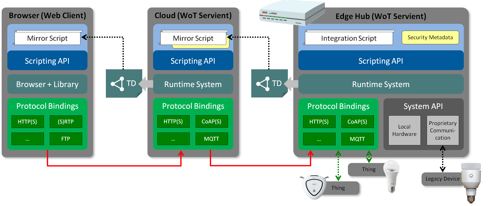

The Web of Things is intended to support IoT interoperability.
Primarily, it provides mechanisms to formally describe IoT interfaces
to allow IoT devices and services to communicate with each other,
independent of their underlying implementation,
and across multiple networking protocols.
Secondarily, it provides a standardized way to define and program IoT behaviour.
This document describes an abstract architecture for the Web of Things.
This abstract architecture is derived from a set of use cases and consists of
a set of building blocks.
In this document, each building block is defined and its function explained.
The WoT abstract architecture can be mapped onto a variety of concrete implementation patterns,
several examples of which are given.
This document is focused on the standardization scope of Web of Things,
which consists of three primary building blocks:
Thing Descriptions, a Scripting API, and Binding Templates.
The Thing Description provides a formal mechanism to describe the network interface
provided by an IoT service, independent of its implementation.
Provision of a Thing Description is the primary requirement for a device to participate in the
Web of Things.
In fact, defining a Thing Description for an existing device allows that device to
participate in the Web of Things without having to make any modifications to that device.
The Scripting API provides a convenient mechanism to create, expose, and consume
Thing Descriptions and define behavior, although its use is not mandatory.
Binding Templates define how a Web of Things device communicates using a specific concrete protocol.
Other non-normative architectural blocks and conditions underlying the Web of Things are also
described in the context of example implementations and/or requirements.
In particular, this document includes a description of implementation issues on constrained devices.
Recommendations for security and privacy are also included;
in general,
the Web of Things is intended to preserve and support existing privacy and security device mechanisms and properties.
Through the discussion in WoT IG, This document is reflected the conclusion for the scope of standardization in WoT WG, that is, "Thing Description", "Scripting API" and "Binding Template".
And this document also describes informative information such as implementation which covers very wide variety of systems and requirements for security and privacy. All of them are touched in WoT WG Charter.
This document describes the abstract architecture of the “Web Of Things”,
which we will also refer to with the acronym "WoT".
The purpose of this document is to provide
a guideline to the mapping between functional architecture and
physical devices configuration,
a description of the role and functionality of each logical module,
a reference defining what should be standardized,
a set of requirements for a WoT implementation environment.
Terminology
This document uses the following terms defined elsewhere.
The WoT prefix is used to avoid ambiguity for terms that are defined specifically for Web of Things concepts.
CoAP
Acronym for Constrained Application Protocol [[!RFC7252]]
WoT Thing Description
Structured data describing a physical device or software service (WoT Thing), including metadata, links to vocabulary, a list of supported interactions, and protocol bindings for each interaction.
WoT Thing
An entity (either a physical device or a software service) whose metadata and interfaces are described by a WoT Thing Description.
WoT Server
An entity that exposes a network interface consistent with a WoT Thing Description. A WoT Server is a type of WoT Thing.
WoT Client
An entity that can connect with ("consume") a network interface described by a WoT Thing Description.
WoT Servient
An entity that can act either as a WoT Client or as a WoT Server (or both), eg that can both expose and consume Thing Descriptions.
Since a WoT Servient is also a WoT Server, it is also a WoT Thing.
Local Discovery
A discovery method which can discover entities in local networks (e.g. SSDP, mDNS/DNS-SD, ...).
Nearby Discovery
A discovery method where the physical location is considered (BLE, Audio Watermarking, ...).
Remote Discovery
A discovery method which supports lookup of remote servies, for instance by using a directory service. The end point of the directory must be supported.
Client API
Programming interface that allows scripts to access either a WoT Client or directly attached hardware through a Physical API depending on the discovery.
Server API
Programming interface that allows scripts to access WoT Server.
Discovery API
Programming interface that allows scripts to discover other WoT Things.
Requirements for Functional Architecture
This section defines the properties required in a Web of Things (WoT) abstract architecture.
Flexibility
There are a wide variety of physical device configurations for WoT implementations.
The WoT abstract architecture should be able to be mapped to and cover all of the variations.
Compatibility
We already have many existing IoT solutions and ongoing IoT
standardization activities in many business fields.
The WoT should provide a bridge between these existing and developing IoT
solutions and Web technology based on WoT concepts.
The WoT should be upwards compatible with existing IoT solutions and current standards.
Security and Privacy
The functional WoT architecture should enable the use of
best practices in security and privacy.
Generally,
the WoT security architecture must support the
goals and mechanisms of the IoT protocols and systems it
connects to.
These systems vary in their security requirements
and risk tolerance,
so security mechanisms will also vary
based on these factors.
However, the WoT architecture
needs to do no harm:
it should support security and privacy
at least as well as the systems it connects to.
Security means the system should
preserve its integrity and functionality even when subject to attack.
Privacy means that the system should maintain the
confidentiality of personally identifiable information.
In general,
security and privacy cannot be guaranteed but the
WoT architecture should support best practices.
Security and privacy are especially important in the IoT
domain since IoT devices need to operate autonomously
and in many cases have access to both personal data and/or
can be in control of safety-critical systems.
Compared to personal systems,
IoT devices are subject to
different and in some cases higher risks.
It is also
important to protect IoT systems so that they can not be
used to launch attacks on other computer systems.
General Description of WoT Servient
In the Web of Things (WoT) abstract architecture,
we use the term “Servient” to refer to a functional virtual device that provides access to
IoT physical devices, including the ability to control and query the status of such devices.
The word "Servient" refers to the fact that such devices may take the role of either client or server, or both.
The term "Thing" refers to any device or service which can be described with a WoT Thing Description.
This can include existing devices or devices implemented under other standards (eg OCF)
but provided with a Thing Description as well as WoT Servients
implemented using the functional architecture described here.
The conceptionl architecture of a WoT Servient is presented in .
Conceptional Architecture of a WoT Servient
The role and functionality of each module shown in is as follows:
Thing Description
Metadata and declarations of Thing's capabilities (e.g., possible interactions).
Links to the definition of different machine-understandable vocabulary sets
and defines protocol bindings and serialization formats.
Scripting API
APIs to provide the functionality of a Servient.
Scripting APISs can be classified into 4 categories as follows:
Client API which supports consuming Things
Server API which supports exposing Things
Discovery API which supports abstract method to access discovery mechanism
Security API which supports authentication, authorization and secure communications
In practice the "Security API" is not independent from the other APIs.
It is included as a component of the other APIs.
Binding Templates
Standard binding templates for the most common protocols.
Supported transfer communication patterns include request-response, pub-sub, and bi-directional messaging.
In particular REST-based protocols such as HTTP and CoAP are supported, as well as pub-sub protocols such as MQTT
and raw channel-based protocols such as WebSockets.
Binding Templates are used in the Protocol Binding block of the Thing Description.
The Protocol Binding block consists of a common upper part and binding template part and as described in .
Protocol Binding Structure
The data flow of protocol binding is as follows,
and is mainly described from the point of view of a WoT client:
The Application Logic running in a WoT device acting as a client refers to the TD (Thing Description) of another WoT device acting as a server.
Using the TD, the client's Application Logic can understand the API provided by the server.
If using the Scripting API, the application logic running in the client calls the WoT runtime according to the syntax described in the Scripting API document.
The Runtime block calls the Protocol Binding Common block with the type of request, that is, "Property", "Action" or "Event", and provides appropriate parameters.
The Protocol Binding Common block refers TD of requested WoT device. And Protocol Binding Common block understands
what standardization organization's protocol syntax is supported by the WoT server,
what kind of transport protocol is supported by the WoT server,
what kind of serialization scheme is supported by the WoT server,
what kind of security mechanisms are supported by (or required by) the WoT server.
The Protocol Binding Common block selects the proper binding template to communicate to the WoT server.
For example, it might be an OCF device, a oneM2M device, or some other kind of device.
The Binding template block creates a data payload according to its definition and communicates to the WoT server.
System
A Thing's implementation may access local hardware or services (e.g. storage) through proprietary APIs or other means.
This block is out of scope of WoT standardization.
Application logic running in a WoT Runtime may also access local hardware via the Scripting API as if it were a Thing accessible over a network protocol.
In this case the implementation should be optimized to avoid the overhead that would be involved in a literal implementation
of a network protocol while maintaining a consistent Thing interface.
Such "System Things" are out of the scope of standardization at present although we will document several informational examples.
A device may be physically external to a WoT Servient but connected to the WoT Servient via legacy IoT protocols,
In this case the implemented runtime environment may access Legacy Communication protocols such as Echonet Lite, I2C, SPI, and so on through proprietary APIs.
In particular, constrained devices such as simple sensors with low speed CPUs may be accessed through simple protocols by a gateway which has higher spec resources.
In this case a WoT Servient for the sensors can be implemented in a gateway on behalf of such external hardware by utilizing a Legacy Communication block.
This should only be done if the Legacy Protocol cannot be described using a Thing Description.
This block is out of scope of WoT standardization,
but will sometimes be touched upon during discussion of implementation practices and/or liaisons with other W3C WG and SDOs.
Application
As client and/or Server, application logic is implemented in an App Script using the WoT Scripting API.
As noted, proprietary APIs may be used to access local hardware or legacy communication.
Security and Privacy
Security is a cross-cutting issue that needs to be
taken into account in all other aspects of the
WoT Architecture,
including the Thing Description,
the Scripting API, and the Protocol Bindings.
The Thing Description and the Scripting API should
support both transport and object security using
best practices.
This should apply to both data produced
by the Things' interfaces and to the metadata stored in
the Thing Description and accessible via the Scripting API.
Binding Templates will support the use of appropriate
security mechanisms for the protocols they map to in order
to satisfy the "do no harm" principle.
Implementation View
showed how the building blocks work together in a conceptional view.
In terms of implementation, this view has to be slightly refined to reflect the technical aspects.
This implementation view of a WoT Servient is shown in .
Implementation View of a WoT Servient
Applications running on a WoT Servient are implemented by a script (i.e., JavaScript).
These must provided along with security metadata that defines and isolates their execution environment.
The security metadata also needs to unclude keying material or certifictes to authenticate the Things the script exposes.
The Thing abstraction and Interaction Model is implemented in a runtime system that offers the application-facing WoT Scripting API.
The runtime system interfaces with the Protocol Bindings as well as the System API to access local hardware and proprietary means for communication.
Note that both, local hardware and devices behind proprietary communication are reflected by Things in the runtime environment,
that is, they are accessed through the Scripting (Client) API.
This runtime system is also tasked with generating the Thing Description
based on the Servient metadata (e.g., location), application metadata (e.g., implemented Interactions), and available protocol bindings (e.g., implemented Binding Templates).
Protocol Bindings are implementations of concrete protocols supported by a WoT Servient.
In that sense, they are instantiations of the Binding Templates, which define how to configure a protocol stack for a specific IoT platform.
Deployment Scenarios
Scenarios utilizing WoT Servient, WoT Server and WoT Client are shown in this section.
Each of the scenarios also has explanation of how discovery and Scripting APIs work in these contexts.
WoT Server on a Device
The first example is a WoT server on an actual endpoint device as depicted in .
For example, an electronic appliance such as an air conditioner with web server functionality might be connected directly to a local home network.
In this case, a remote controller with a WoT client can be realized by a browser application or native application.
This remote controller WoT client can then access the air conditioner through the local home network directly.
WoT Server defines and exposes a Server API via a WoT Thing Description.
Script in WoT Client accesses WoT Server (via a Client API) using interactions defined by the server's WoT Thing Description.
Client API connects to WoT Server via a specific application and transport protocol (eg OCF over CoAP over UDP over IP).
WoT Client on Smartphone
The second example is a WoT Client on a Smartphone as shown in .
For example, a browser on a smartphone can be expanded to include WoT Client functionality
that can directly or remotely control an air conditioner depending on the network.
Wi-Fi or Bluetooth/BLE connection of the smartphone is used for the direct (local) control while
the cellular network of the smartphone can be used for remote control.
WoT client on Smartphone
Discovery:
WoT Client discovers an electronic appliance when the remote controller is nearby [nearby discovery].
WoT Client discovers WoT Servient remotely when the remote controller is outside [remote discovery].
APIs
Script on WoT client accesses electronic appliances nearby with Client API through local interface when possible.
WoT Servient exposes Server API.
Client API connects to WoT Server via a specific application and transport protocol
(eg OCF over CoAP over UDP over IP) when remote access is needed.
WoT Servient on Edge Hub
shows an example of WoT Servient on an edge hub.
In this case, an edge hub with WoT Servient is placed between a home network and the internet.
The edge hub manages electronic appliances in a house.
The edge hub controls the electronic appliances when remotely receiving a command from a remote controller
with WoT Client such as browser application or native application on a smartphone.
WoT Servient exposes a Server API and consumes a Client API.
The Client API in the WoT Servient allows scripts running in the WoT Servient's runtime to access electronic
appliances through a physical interface.
Client API in WoT Client is used to connect to the WoT Servient via a specific application and transport protocol
(eg OCF over CoAP over UDP over IP) when needed.
WoT Servient on Cloud Server
Use of a WoT Servient on a Cloud Server has several variants as follows:
Smart Home: WoT Device
shows an example of WoT Servient on a cloud server that shadows a WoT device.
A WoT Servient running in the cloud serves as device shadow of an electrical appliance.
In this case the WoT Servient controls the appliances when receiving commands from a WoT Client
such as a browser or an application on a smartphone.
WoT Servient on cloud Server controls WoT device
Discovery:
WoT Servient discovers WoT Server remotely [remote discovery].
WoT Servient exposes Server API and Client API.
The Client API in WoT Servient allows script to access WoT Server through IP based network.
WoT Server exposes Server API.
Client API in WoT Client accesses WoT Servient with REST or Client API through IP-based network.
Smart home: Legacy device
shows an example of a WoT Servient on a cloud server that
controls a legacy electronic appliance through an edge hub.
In this case,
a WoT Servient running in the cloud caches properties of electric appliances that
an edge hub manages and acts as an agent that manages them in the cloud in conjunction with the edge hub.
WoT Servient on Cloud Server controls legacy device
WoT Servient1 exposes Server API and Client API.
The Client API in WoT Servient 1 allows a script to access WoT Servient 2 through an IP based network.
WoT Servient 2 exposes Server API and Client API.
The Client API in WoT Servient 2 allows a script to access electronic appliances through a local physical interface.
Client API in WoT Client accesses WoT Servient 1 with REST or Client API through an IP-based network.
Smart Factory
shows an example of a Smart Factory that uses WoT Servients.
In this case, WoT Servient 1 and WoT Servient 2 control factory equipment with legacy communication such as RS-485 or EtherCAT.
WoT Servient 3 running in the cloud collects data from the other WoT Servients.
Services on WoT Servient 3 analyze the data and can provide a dashboard.
Users can monitor the dashboard from a browser.
Note that running WoT Servient 3 in the cloud is not mandatory (it could also run in a local gateway computer),
however the other WoT Servients might be placed only on the local network for security reasons
(e.g., to implement perimeter security using a firewall)
and because they require actual physical access to the controlled or monitored hardware.
WoT Servient 3 exposes Server API and Client API.
The Client API in WoT Servient 3 allows scripts to access WoT Servient 1 and WoT Servient 2 through IP based network.
WoT Servient 1 and WoT Servient 2 expose Server API and Client API.
The Client API in WoT Servient 1 and WoT Servient 2 allows scripts to access
factory appliances nearby from these WoT Servients.
A browser monitors WoT Servient 3 through a web (HTTP/TCP/IP) interface.
Connected Car
shows an example of a Connected Car that utilizes WoT Servients.
In this case,
a WoT Servient is running on a gateway and is connected to car devices through CAN to the car navigation system.
Services on a WoT Client running in the cloud collects data pushed from multiple WoT Servients and
analyzes the data from cars to determine traffic patterns.
Finally, the WoT Servient accesses a WoT Server running in the cloud to get traffic data and
shows this data to the driver through the car navigation systems.
Connected Car utilizing WoT Servient
Discovery:
WoT Servient discovers car devices nearby [nearby discovery].
WoT Servient exposes Server API and Client API.
The client API in WoT Servient allows script to access car devices through physical interface.
WoT client API in WoT client accesses WoT Servient with REST or Client API through IP-based network.
Thing to Thing Control
shows an example of direct Thing to Thing control using WoT Servients.
This scenario is as follows:
a sensor detects room temperature surpassing a set threshold e.g. 25°C,
so a control agent issues "power-on" command to an air conditioner.
In this case,
a temperature sensor is connected to WoT Servient 1 and a control agent that monitors the temperature and
compares it to a threshold is also working on the WoT Servient 1.
On the other hand the air conditioner is connected to WoT Servient 2 and acts as a server that controls the air conditioner.
WoT Servient 1 and WoT Servient 2 exposes Server API and Client API.
The client API in WoT Servient 1 allows script to access WoT Servient 2 through IP based network.
WoT Servient 2 API exposes a Server API and supports an internal Client API.
The client API in WoT Servient 2 allows script running on the WoT Runtime in WoT Servient 2 to access local hardware
through a physical interface.
Mapping Variations
In real world, there are many possibilities for mapping the WoT abstract architecture
to physical devices and network structures.
This section, which is informative but not normative, lists some specific mappings.
Other mappings may be possible.
Basic Use Case for Mappings
Basic Use Case
shows a simple use case.
In this use case, a browser accesses a WoT Servient to get some information from a legacy
device and/or to send some control parameters to a legacy device.
In this use case, the browser’s App Script refers to the WoT Thing Description of
the WoT Servient to obtain information about the device and what kind of APIs it provides.
Then App Script calls the Client API provided by its RunTime Environment and through a resource model
block and a protocol binding block, the request is mapped onto an internet protocol such as HTTP/TCP/IP.
The protocol accesses the Server Connector block of the WoT Servient through this network interface,
after which the request is transferred to the App Script in the WoT Servient through the protocol binding block
and resource model block of the WoT Servient.
The App Script running on the WoT Servient understands what kind of request is coming from browser and
according to that request,
the App Script on the WoT Servient controls the legacy device through
local hardware and legacy communication APIs provided in its Runtime Environment.
WoT Servient on Device
WoT Servient on Device Itself
In this case, a WoT Servient is running on the device itself.
The right most WoT Servient in shows an LED Light,
whose controller has a powerful CPU and a large memory and is able to provide web server functionality connected directly to the Internet.
Then the leftmost browser and/or another application on the internet can access the LED light through the Internet directly.
Resource-constrained Device as Thing
Devices that are not powerful enough to host a WoT Servient can still act as Things.
In this case, a classic firmware is providing a Thing Description that describes the functionality and protocols implemented.
The right most WoT Servient in shows an legacy device
has a constraint CPU and a small memory and is able to provide web server functionality connected directly to the internet.
Then the leftmost browser and/or another application on the internet can
access the device through the internet directly like .
WoT Servient on Smartphone
This example uses a WoT Servient running on a Smartphone.
Smartphones are not only popular but have enough performance to provide gateway functionality.
This functionality can be used to bridge between the internet and a legacy device without any
intermediate hardware.
WoT Servient on Smartphone
shows an example of a WoT Servient on a smartphone,
which can act as a gateway to existing devices (e.g., via Bluetooth or local Wi-Fi).
The Web browser with the user interface can either run on the smartphone directly
or remotely on a separate device (such as a laptop).
WoT Servient on Edge Hub
WoT Servient on Edge Hub
shows an example of WoT Servient on an edge hub.
Edge hubs are often introduced as a home automation and/or home energy management solution.
In the case of consumer electronics, there are very wide variety of
physical communication formats such as WiFi, 802.15.4g, Bluetooth Low
Energy, HDPLC and so on. In order to normalize those variations,
almost all home automation systems introduce an edge hub.
In , a WoT Servient wraps various mechanisms for communicating with legacy
devices and provides to other clients a universal device accessing method.
Inside the home, HTTP/TCP/IP/WiFi can then be used as the sole
unfied communication method between WoT Servient on
an edge hub and a user interface device such as a web broswer.
WoT Servient on Cloud Server
Client Apps can control devices at home through WoT Servient on an
edge hub. But in this case the location of client apps is restricted to the
home because physical communication path “WiFi” and/or wired Ethernet
between edge hub and client apps such as browser is limited
to the physical domain provided by the WiFi signal.
To provide for controlling devices at home from outside the house, a
HTTP/TCP/IP interface to a WoT Servient
running in the cloud with a globally accessible URL could be used.
However, in this case the WoT Servient in the cloud cannot generally access
devices running in the home through only local interfaces such as Bluetooth.

WoT Servient on Cloud Server and Edge Hub
shows an example of WoT Servient running on
a cloud server paired with another WoT Servient running on an edge hub.
In the case of , a browser accesses the WoT Servient on the cloud Server named “Cloud”.
This WoT Servient provides its interface through the internet globally.
So, wherever browser user is, he/she can access this WoT Servient.
The WoT Servient on "Cloud" can accepts the browser and/or other application’s request
through HTTP, CoAP and so on.
Then the WoT Servient on the cloud server finds out the route to access another WoT Servient on an edge hub.
After finding out the route, the WoT Servient on the cloud server transfers
browser’s request to WoT Servient on the edge hub.
After that, the edge hub processes the request according the case.
The Thing Description of the WoT Servient on the cloud server can be just
a mirror of that on the edge hub,
since it will generally just pass interactions directly through.
More generally, though, one or both WoT Servients can provide services such as
privacy filtering or sub-setting.
When the user is home, they can also access the WoT Servient in the edge hub directly.
In the case of , the edge hub works as
Unifier of variety of legacy communication protocols
both in the physical and logical view;
Firewall between the internet where the "platform" WoT Servient runs in the cloud
and legacy connected devices at home;
Privacy filter which substitutes real image and/or speech, and
logs data at home;
Autonomous WoT Servient which provides house inside the server,
even if the connection is shut down between internet and the edge hub;
Emergency services running in a local environment when fire
alarms and similar event occur.
WoT Servient on Cloud Server Only
shows a second example of WoT Servients on a cloud server.
In this case, a browser accesses WoT Servient on the cloud server named
“Cloud” same as . This WoT Servient provides access through the global
internet. So, wherever browser user is, he/she can access this WoT Servient.
WoT Servient on “Cloud” accepts browser and/or other application’s request
through HTTP, CoAP and so on. Then WoT Servient on the cloud server
finds out the route to access a proprietry discovery service running on an edge hub. In
case, the WoT Servient running in the cloud could talk to another WoT Servient running on the edge hub.
However, many service providers have already provided IoT services using proprietary IoT interfaces or some other IoT standard.
In this case, the edge hub can still support the following same functionalities,
as in the previous case, but using methods outside the WoT definitions.
Conclusion
A abstract architecture for the WoT and a functional architecture for WoT Servients has been introduced.
It is based on three building blocks which are to be covered by additional WoT definitions:
Thing Descriptions, Binding Templates, and a Scripting API.
Of these, the Thing Description is primary as it describes the network interface of a device
whether or not it uses the WoT Scripting API internally.
However, when a device is using the WoT Scripting API
internally, it can also access other WoT Things using Client APIs by reading in ("consuming") the WoT Thing
Descriptions of those devices.
The architecture described here applies well to wide variety of different application scenarios.
We have described serveral situtations where one or more WoT Servients were used together to overcome,
for instance, limitations on the range of specific communication protocols. These examples are not
exhaustive and were only meant to illustrate the flexibility of the WoT approach.